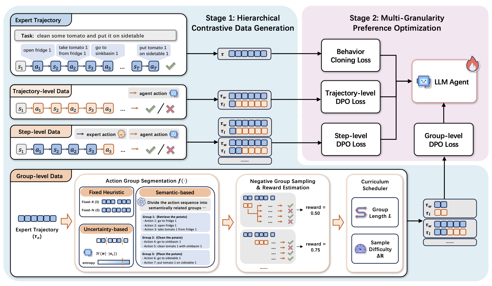

Large Language Models (LLMs) as autonomous agents are increasingly tasked with solving complex, long-horizon problems. Aligning these agents via preference-based methods like Direct Preference Optimization (DPO) is a promising direction, yet it faces a critical granularity mismatch. Trajectory-level DPO provides stable signals but blur where credit should be assigned within long trajectories, whereas step-level DPO offers fine-grained supervision but can be statistically noisy and data-inefficient when Monte Carlo rollouts are limited, and can be hard to fully exploit multi-step structured behaviors that only reveal their effect over several actions. To balance this trade-off, we introduce Hierarchical Preference Learning (HPL), a hierarchical framework that optimizes LLM agents by leveraging preference signals at multiple, synergistic granularities. While HPL incorporates trajectory- and step-level DPO for global and local policy stability, its core innovation lies in group-level preference optimization guided by a dual-layer curriculum. Our approach first decomposes expert trajectories into semantically coherent action groups and then generates contrasting suboptimal groups to enable preference learning at a fine-grained, sub-task level. Then, instead of treating all preference pairs equally, HPL introduces a curriculum scheduler that organizes the learning process from simple to complex. This curriculum is structured along two axes: the group length, representing sub-task complexity, and the sample difficulty, defined by the reward gap between preferred and dispreferred action groups. Experiments on three challenging agent benchmarks show that HPL outperforms existing state-of-the-art methods. Our analyses demonstrate that the hierarchical DPO loss effectively integrates preference signals across multiple granularities, while the dual-layer curriculum is crucial for enabling the agent to solve a wide range of tasks, from simple behaviors to complex multi-step sequences.
@inproceedings{gao2026solving,
title={Solving the Granularity Mismatch: Hierarchical Preference Learning for Long-Horizon {LLM} Agents},
author={Heyang Gao and Zexu Sun and Erxue Min and Hengyi Cai and Shuaiqiang Wang and Dawei Yin and Xu Chen},
booktitle={The Fourteenth International Conference on Learning Representations},
year={2026},
url={https://openreview.net/forum?id=s8usvGHYlk}
}